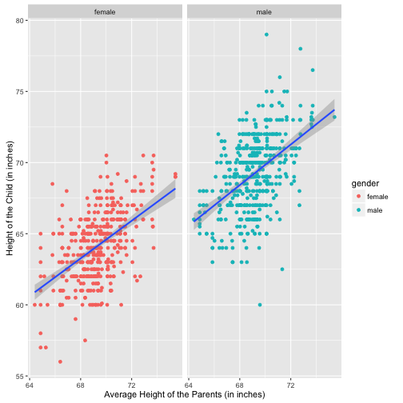

xwMOOC 기계학습
선형대수와 함께하는 회귀분석
학습목표
- 기초 선형대수를 통해 회귀분석을 이해한다.
- 선형대수 수학식을 R 언어로 구현한다.
1. 회귀분석 1
회귀분석은 갤톤(Galton) 부모와 자식의 신장간의 관계를 회귀식으로 표현한 데이터셋이 유명하다.
부모의 신장을 기초로 자녀의 신장을 예측하는 회귀식을 구하기 전에 산점도를 통해 관계를 살펴보면 다음과 같다. 성별에 대한 신장의 차이도 산점도를 통해 시각적으로 확인된다.
library(HistData)
data(GaltonFamilies)
library(ggplot2)
## 1. 산점도
# 성별 색상으로 구분
ggplot(GaltonFamilies) +
aes(midparentHeight, childHeight) +
geom_point(aes(colour=gender)) +
stat_smooth(method="lm") +
xlab("Average Height of the Parents (in inches)") +
ylab("Height of the Child (in inches)")
# 다른 산점도로 성별 구분
ggplot(GaltonFamilies) +
aes(midparentHeight, childHeight, colours=gender) +
geom_point(aes(colour=gender)) +
stat_smooth(method="lm") +
xlab("Average Height of the Parents (in inches)") +
ylab("Height of the Child (in inches)") +
facet_wrap(~gender)
# 성별 상관없는 회귀직선
ggplot(GaltonFamilies) +
aes(midparentHeight, childHeight) +
geom_point() +
stat_smooth(method="lm") +
xlab("Average Height of the Parents (in inches)") +
ylab("Height of the Child (in inches)")
선형대수로 회귀계수를 추정하는 문제를 풀면 다음과 같이 정의된다. 한번 미분해서 \(\nabla f(\beta ) = -2Xy + X^t X \beta =0\) 0으로 놓고 푼 값은 최소값이 되는데 이유는 \(\beta\)에 대해서 두번 미분하게 되면 \(2 X^t X\) 로 양수가 되기 때문이다.
\[f(\beta ) = ||y - \beta X ||^2 = (y - \beta X)^t (y - \beta X) = y^t y - 2 y^t X^t \beta + \beta^t X^t X \beta\]
\[\nabla f(\beta ) = -2Xy + X^t X \beta\]
\[\beta = (X^t X)^{-1} X^t y \]
위에서 정의된 방식으로 수식을 정의하고 이를 R로 코딩하면 회귀계수를 다음과 같이 구할 수 있다.
## 2. 회귀분석
# 선형대수 수식으로 계산
x <- GaltonFamilies$midparentHeight
y <- GaltonFamilies$childHeight
x <- cbind(1, x)
solve(t(x) %*% x) %*% t(x) %*% y [,1]
22.6362405
x 0.6373609
이를 lm 함수를 사용해서 다시 풀면 위에서 선형대수 수식으로 계산한 것과 동일함을 확인하게 된다.
# lm 함수를 통해 계
suppressMessages(library(dplyr))
lm(childHeight ~ midparentHeight, data=GaltonFamilies) %>% coef() (Intercept) midparentHeight
22.6362405 0.6373609